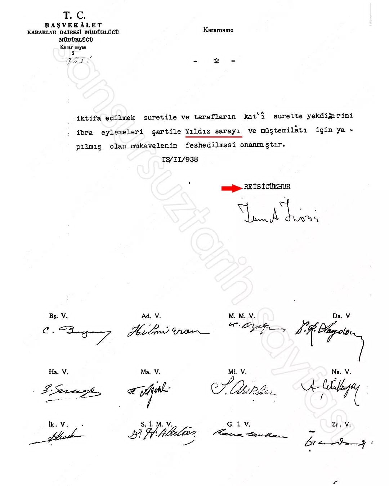

Sultan II.Abdülhamidhan Hz devleti ve İslam alemini 33 yıl boyunca Yıldız Sarayından yönetmişti. Yıldız Sarayı Osmanlı'nın ve İslam alemini idare eden Halifelik merkeziydi. 1926 yılında M.Kemal imzasıyla İtalyan bir Kumarbaza "her türlü ihtiyacı giderecek" bir gaziono, meyhane ve kumarhane yapılmak üzere kiraya verildi..(3ten 6.sayfa) Hatta açılışı bizzat dönemin İstanbul belediye başkanı kumar oynayarak yapmıştı.
Avrupada manşetler atılıyor "bir zamanlar halifeliğin idare merkezi bugün kumarhane" deniliyordu. Burada Türkler epeyce ütülmüştü.. Çok paralar kaybettiler ve sürekli kavgalar oluyordu. Öyle ki Sinop Mebusu Recep Zühtü " Yıldız Kumarhanesinin kamuoyu üzerindeki zararlı tesirlerini gidermekiçin hükümetçe ne gibi tedbirler alındığına dair" soru önergesi vermişti.
Kumarhane, İstanbul’un en gözde mekânı olmuştu ama 12 Ekim 1926 gecesi gelen bir haber herkesi şaşırttı: Yıldız’da kendi parası ile zimmetindeki paraları kaybeden Macar Büyükelçiliği’nin 26 yaşındaki başkâtibi Miklon Derepaş intihar etti.-Kumarhane ile ilgili tartışmalar, birkaç ay içerisinde yoğunlaştı, Yıldız’da bazı Türkler’in de büyük paralar kaybettikleri ortaya çıkınca gazetelerde “Yıldız, Türk servetini kemiren âdî ve müptezel bir batakhaneden başka bir şey değildir” şeklindeki yazılar arttı
İstanbul Başsavcısı Nazif Bey, 12 Eylül 1927 gecesi kumarhaneyi polislerle bastı ve mühürledi! -Yıldız’da kumar masasında basılan Türk vatandaşları mahkemeye çıkartıldılar. Hâkimin “Yasak olduğu halde neden kumar oynuyordunuz?” sorusuna “Yasak değildi, ilk kumarı açılış gecesi İstanbul’un Belediye Başkanı oynamıştı ve o gece hepimiz davetli idik” cevabını veren sanıkların tamamı beraat etti. Hatta o dönem İstanbul Beld.Yıldız Kumarhanesi’nin tanıtımı için bastırdığı Fransızca broşür(son sayfa) da verildi! Yıldız Sarayı 1926'dan 1938 yılına kadar böyle acı bir sahneye Tanık oldu
DÜŞÜNÜN KOSKOCA OSMANLININ DEVLETİ VE İSLAM ALEMİNİ YÖNETTİĞİ İDARE MERKEZİ KUMARHANE YAPILIYOR.. DÜŞMANIN AKLINA GELİR Mİ OSMANLIYI BÖYLE AŞAĞILAMAK? ÇOK YAZIK.

Evet gerçek çok acıdır kabullenmesi çok zordur. Sakın geçmiş geçmişte kaldı diyip kendini avutma.
"Haksızlık Karşısında Susan Dilsiz Şeytandır."
(HZ.Muhammed S.A.V)
“Haksızlık önünde eğilmeyiniz, çünkü hakkınızla beraber şerefinizi de kaybedersiniz”
(HZ Ali)